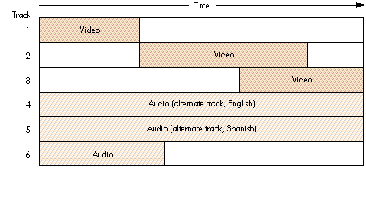
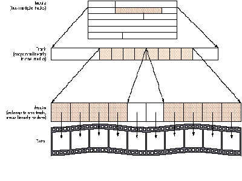
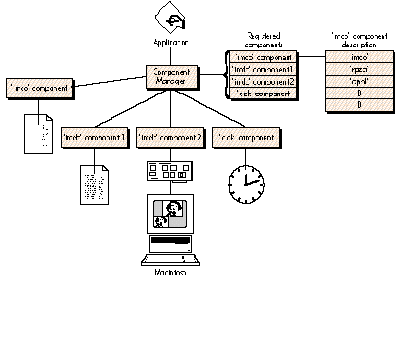
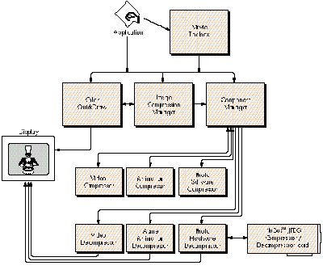
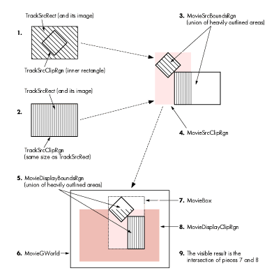
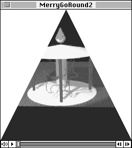
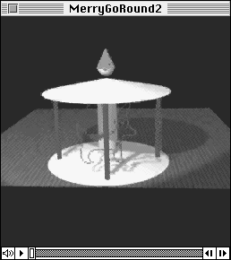
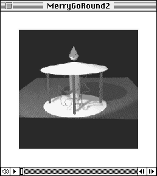

QuickTime is Apple's new architecture for enabling the Macintosh to handle time-
based data. The recently introduced QuickTime 1.0 makes it easy for you to add dynamic
media like video and sound into your applications--and that's just the beginning. Two
sample programs show you how to do the two most basic (and important) QuickTime
tasks: playing existing movies and creating new ones.
The world isn't standing still--it's moving,fast --and Apple intends to stay at the
front of the race. When Apple came out with the Lisa® and then the Macintosh, the
idea of a document file that mimicked a piece of paper was a big deal. But now it's not.
Users have taken the "paper" metaphor for granted and are now looking for new
metaphors that increase their ability to communicate. One way to do that is to allow
documents and applications to contain and display data thatchanges .
QuickTimeTM is more than just the ability to record and play back movies--it's a
fundamental addition to the Macintosh Operating System. Just as QuickDrawTM gave
the original Macintosh the edge of sophisticated graphics in 1984, QuickTime will give
the Macintosh another edge over other computers: thebuilt-in ability to handle data
that changes with time.
Until now, the Macintosh Toolbox has not provided a standard way of dealing with
dynamic media, and some developers have come up with their own solutions, especially
in the areas of video and sound. Unfortunately, this has resulted in confusion and a lack
of standards and basic system support for these data types. Apple has created
QuickTime to provide a standard way of dealing with data that changes with time. Even
more important, QuickTime gives you the necessary support software so that you can
spend your timeusing new data types instead of designing, implementing, and
maintaining them.
QuickTime 1.0 works on all color-capable Macintosh computers running Color
QuickDraw (models with either a 68020 or 68030 processor) and either System
6.0.7 or System 7.0; a later version will add QuickTime support for monochrome,
68000-based Macintoshes. As a result, you, the developer, can take it for granted that
QuickTime will be available onany Macintosh running your software.
QuickTime 1.0 makes it possible for your program to manipulate the audio/video
sequences we callmovies . (The size, duration, and quality of the average movie largely
depends on how much disk space you have for movie files.) It also includes routines for
the compression and decompression of still and dynamic images (which should
encourage you to use color images without worrying about how much space they take
up).
The result of all this is something that you'll like very much: applications and
documents that give users a richer experience with your product than they can get
with non-QuickTime Macintosh applications or applications on other platforms.
QuickTime will make possible a new generation of Macintosh software and hardware
solutions that until now have been available only using expensive and narrow-purpose
hardware.
QuickTime 1.0 contains the following parts:
MOVIE TOOLBOX
The basic component of QuickTime is themovie . At its highest level, a movie contains
one or more tracks , each of which points to data of one type (see Figure 1). A movie
also includes its time scale, duration, size, location and poster information, current
selection and insertion point (if any), preferred volume, image scaling and positioning
matrix, and other information (more on this later).

Figure 1 A Movie and Its Tracks
A movie contains any number of tracks (it's true that a movie can have zero tracks,
but that's kind of a boring case). Each track has amedia associated with it, which points
to the "raw" data that the track draws from when it plays. Other track parameters
include time scale, duration, time offset within the movie, audio volume, and track
type. Thetrack edit list is the list of media subsegments that define the track's output.
Each media references a file that contains its raw data; the file can be any place you
can put a random-access stream of data--it can be in the file containing the movie, a
nearby file, or even a file elsewhere on the network! If more than one media in the
movie references the same data file, the different types of data may be interleaved
within the file.
As Figure 2 shows, each media is associated with exactly one track and vice versa.
Because the track can map nonlinearly to the media (as is the case in Figure 2), you
can edit a movie by simply changing a few pointers rather than having to move large
pieces of data around. Two or more tracks can be members of a movie'salternate group
; when the user picks one of these tracks to be active, QuickTime does not use any of
the other alternate tracks.
Each media references "raw" data of one type--for QuickTime 1.0, either video or
sound. It also contains its duration, time scale, priority, language, quality, media type,
and handler. The media handler knows how to play back its data at the right time.
The poster is the single frame (in the movie) that the creator of a movie considers as
best conveying the spirit of the movie. You can think of it as the frame you would like
to show if motion were not possible--for example, when printing the document that
contains the movie. The poster is usually a frame from the movie the user sees, but it
can be an arbitrary frame from a video track that is not visible in the normal movie.

Figure 2 Basic Components of a Movie
The preview is a short piece of the movie that best conveys the spirit of the movie.
Note that although a preview is associated with a movie, the data (frames) associated
with the preview may not be part of the movie the user sees. In movie terms, the track
associated with the preview may not be part of the regular movie playback.
Although in the normal situation a movie file contains the data for its tracks (in which
case it's called self-referenced data ), it's possible for the data associated with a media
to reside in a file separate from the movie, anywhere on the network.
Future releases of QuickTime are expected to extend the referencing capabilities of
media to allow for data being acquired as the movie plays along--as, for example, data
coming from a CD player or a video digitizer board.
To recap: A movie may contain any number of tracks. These tracks do not need to be
playing at the same time, and as a matter of fact, a track doesn't need to become active
at all. Several tracks can belong to a movie's alternate group, and only one of them can
play at a time.
COMPONENT MANAGER
One very important architectural feature of QuickTime 1.0 is its extensibility. Let's
take a video track as an example. When the Movie Toolbox (the subset of QuickTime
that deals with movies) finds out it needs to play back this track, it calls the video
media handler (which is a component). The handler in turn calls the Image
Compression Manager, telling it the type of compression used. The Image Compression
Manager then calls the Component Manager to find out if a corresponding decompressor
component is available. If so, the Image Compression Manager can use this component
without having to know all the details about the particular decompressor component
needed. Of course, this is just one example; several different compression and
decompression techniques are available, and the Component Manager allows the caller
to choose a certain type of component by supplying additional information about it.
Let's study the decompressor component with subtype 'rpza', which has the following
structure:
ComponentResource:
ComponentDescription /* Registration Parameters */
componentType: imdc
componentSubType: rpza
componentManufacturer: appl
componentFlags: 0x00000447 /* binary 0100 0100 0111 */
componentFlagsMask: 0
resourceSpec /* resource where component code is
found */
type: cdec /* the code is in a resource of type
'cdec' */
id: 0x000A /* with id of 10 */
resourceSpec /* resource with name string */
type: STR /* 'STR ' resource */
id: 0x000B /* with id of 11 */
resourceSpec /* resource with info string */
type: STR /* 'STR ' resource */
id: 0x000B /* with id of 11 */
resourceSpec /* resource with icon */
type: ICON /* 'ICON' resource */
id: 0x000B /* with id of 11 */
The registration parameters allow the Component Manager searching for a component
of type 'imdc' (image decompression) to narrow the search to a component of subtype
'rpza', made by 'appl' (Apple Computer, Inc.). The parameters include the
componentFlags and componentFlagsMask fields, which help determine how to search
for a given component. Note that the subtype field can be omitted if no more
information is considered necessary for the type of component in question.
For example, the componentFlags field in the example above indicates that the
decompressor can do the following:
bit 0 scale on decompress
bit 1 mask on decompress
bit 2 use matrix for blending on decompress
bit 6 spool (used for compression and decompression)
bit 10 do fast dithering
The cleared bits have meaning, too. For example, the cleared bit 3 means that this
component cannot use a matrix for the placement and scaling of the decompressed
image.
The ComponentResource (shown above) also contains the type and ID of the resource
where the code that performs the actual work is located. In addition, it contains the
type and ID for resources containing the name string, info string, and icon associated
with the component.
In short, the Component Manager can help applications access certain services by
function rather than by name; Figure 3 shows how an application can call the
Component Manager to interact with different types of components. When an
application registers a component, it's guaranteeing that the component supports the
basic set of calls defined for the type. This enables applications to find components by
their function without having to know exact names or locations.
COMPRESSION AND DECOMPRESSION
Following the basic concepts of the Component Manager, the Image Compression
Manager provides applications with a common interface to compression and
decompression "engines" that's independent of devices and drivers. Figure 4 shows how
the Image Compression Manager interacts with the Movie Toolbox, the Component
Manager, and the application.
The services provided through the Image Compression Manager allow applications to
compress still images as well as sequences of images (such as those found in video
track media). In the case of image sequences, the Image Compression Manager also
provides optional support for thedifferencing of frames--that is, storing only the
pixels that differ from the previous frame to reduce the size of the movie data.
Given that these compression techniques are tightly coupled to the type of data they're
supposed to handle, the Image Compression Manager does not work for sound, text, or
any type of data other than images.

Figure 3 Component Manager Interactions
The Image Compression Manager accepts the input data as either a PICT or a pixMap;
obviously, the first format is most often used for still images and the second for
sequences of video. Since images can be very large (even when compressed), in both
cases the Image Compression Manager allows for the calling application to provide
spooling routines that feed the Image Compression Manager source data as needed and
write the resulting compressed data to disk. The Image Compression Manager can also
translate between pixMaps of varying bit depth. This simplifies the manipulation of an
image split across monitors of two different bit depths; it also extends a compressor or
decompressor's ability to manipulate images that (because of incompatible pixel bit
depths) it would otherwise not be able to handle.
In the case of pictures, the Image Compression Manager provides a set of high-level
calls that allow applications to compress and play back PICT resources and files.
Although these compression facilities are available to applications that call them, even
applications that know nothing about QuickTime's compression facilities can play back
pictures containing compressed images. (This can occur because QuickTime-unaware
applications calling DrawPicture will automatically invoke the Image Compression
Manager, which will decompress the image automatically and hand the application the
uncompressed PICT image it was expecting.) In other words, when QuickTime is
present, you can use compressed PICTs as part of your application and know that any
PICT-reading application can open them correctly.

Figure 4
Image Compression Manager Interactions
The Image Compression Manager provides a simple and at the same time powerful
system for compressing images. Since the mechanism is based in the workings of the
Component Manager, adding new compression engines is as simple as dropping a 'thng'
file into the Extensions folder of the System Folder (for System 7.0, or into the
System Folder itself for System 6.0.7). Even when the exact decompressor component
is not available to decompress the data, the Image Compression Manager will find a
substitute if any is available. High-level calls are provided for applications to access
these features in a nearly effortless manner.
We'll now directly explore the QuickTime features that you can immediately put into
your applications. We'll follow two samples, each of which accomplishes one of the two
basic QuickTime functions:playing back a movie (which most applications should be
able to do) andcreating a movie (which you'll need to know how to do if your
application creates new movies).
PLAYING BACK A MOVIE
To show the basic steps necessary to open movie files and play them back, we'll use the
sample application SimpleInMovie. (You can find the source code for this on the
latestDeveloper Essentials disc.) This program presents the user with a dialog for
opening a movie and plays the movie back in awindow. SimpleInMovie uses
QuickTime's standard movie controller (which is itself a component) to let the user
start or stop the movie as well as scan back and forth within it. Some commands for the
movie controller are implemented as menu commands to show how a program can
control the controller component.
But first, a few words . . . Before we look at the SimpleInMovie source code, we
need to make several new distinctions. The most important distinction is that of
apublic movie versus a playable movie . A playable movie is what the Movie Toolbox
manipulates; it has all the information needed for it to be played or edited. In contrast,
a public movie is used only for data interchange, and it contains all the information
needed to create a playable movie. A playable movie must be converted to a public
movie (which is stored as a resource of type 'moov', pronounced "moo-vee") before it
can be stored to disk or put into the Clipboard. QuickTime provides two calls to convert
between the two forms: GetMoviePublicMovie converts a public movie into a playable
movie, and MakePublicMovie does the opposite.
To summarize, a playable movie is what the Movie Toolbox plays back; it has all the
media handlers instantiated and is ready to go. A public movie is strictly a static
representation used when the movie is to be transferred or copied.
QuickTime gives you wide latitude in choosing the location of the raw data associated
with a media, so we need to look at a few alternatives. A movie file has a file type of
'MooV'. We'll call a movie file "normal" if it contains exactly one 'moov' resource.
A movie file whose data fork contains only the media data referenced by the movie and
no more is called a flattened movie . Specifically, it doesnot contain media frames that
aren't referenced by the track to which they belong--for example, the unshaded media
frames in Figure 2. A flattened movie is handy for transporting a moviein toto to
another Macintosh computer. QuickTime provides a FlattenMovie call to create such a
movie file.
The single-fork file is another type of movie file. Here, not only the media data but
also the 'moov' resource data are in the file's data fork. (You might use a single-fork
file when exporting to a non- Macintosh computer that doesn't have separate data and
resource forks.) You can make a single-fork file by calling FlattenMovie with the
proper parameters. QuickTime can automatically read these files.
Another possibility is that the movie's media point to data that are not in the movie
file's data fork but in a different file; this is very common when you're about to edit a
movie. Remember that to edit a track, you need only change pointers to the media; if
you had to cut/copy/paste the actual image data (which can be multiple megabytes in
length), editing operations could take an inordinate amount of time and disk space.
Back to the code. We can now proceed to examine SimpleInMovie's source code. Note
that in the listing below, the comments help describe only those calls that have
directly to do with playing movies. The full source code of this program (on
theDeveloper Essentials disc) contains numerous other comments on the details that
pertain to all normal Macintosh operations.
As is the case with most parts of the Macintosh Toolbox, the Movie Toolbox has to be
initialized. In our sample, the initialization is done as follows:
void InitMovieStuff()
{
ComponentDescription controllerDescriptor;
long version;
extern Boolean DoneFlag;
extern Component movieControllerComponent;
/* We have to fill in the fields for the player descriptor in
order to get the standard movie controller component. */
controllerDescriptor.componentType = 'play';
controllerDescriptor.componentSubType = 0;
controllerDescriptor.componentManufacturer = 0;
controllerDescriptor.componentFlags = 0;
controllerDescriptor.componentFlagsMask = 0;
/* We'll use gMoviesInited as a flag for everything; false means
that the Movie Toolbox or standard player couldn't be
initialized. */
gMoviesInited = false; /* so pessimistic */
if (!(Gestalt(gestaltQuickTime, &version)))
if (!(EnterMovies()))
if (movieControllerComponent =
FindNextComponent((Component)0,
&controllerDescriptor))
/* No error means we're OK. */
gMoviesInited = true; /* Good! */
if (!gMoviesInited) {
Alert(rBadMooviesALRT, nil);
/* Inform user we're bailing out. */
DoneFlag = true;
}
}
EnterMovies initializes the Movie Toolbox. In an application, this must be balanced by
ExitMovies (or Bad Things will happen to your application). If you're calling
EnterMovies from a nonapplication environment (such as an XCMD),you must call
ExitMovies to balance the calls and ensure that all memory allocated and all globals are
disposed of.
Normally, when an application presents a movie, it also wants to give the user some
basic control over the playing of the movie. QuickTime provides a tool that lets
developers add such control easily: a component called thestandard movie controller
(the horizontal bar at the bottom of the window in Figure 5).
Figure 5The Standard Controller
Getting and using the component. To use a component, you first have to get it,
which means you must fill in a ComponentDescription. Our example specifies only the
basic type, but the subtype, manufacturer, and flags fields allow you to specify the
component in greater detail. If, for example, you were looking for a compressor, the
type would be 'imco' for an "image compressor" or 'imdc' for an "image
decompressor." In addition, the subtype could be 'rpza', 'rle ', or 'jpeg' (or others),
each of which specifies a specific implementation of compression or decompression.
Although an application can register components "live" (that is, after the application
has started up), the normal way they get registered is during system startup, at which
time the Component Manager registers all components found in files of type 'thng' in
the Extensions folder of the System Folder (for System 7.0, or in the System Folder
itself for System 6.0.7). Because this happens automatically, the application can find
a specific component by making the following call:
FindNextComponent((Component)0, &controllerDescriptor);
This call tells the Component Manager to find the component that matches the
descriptor (controllerDescriptor); passing 0 in the first parameter tells the
Component Manager to return thefirst one of this type that it finds. In the case of a
more extensive search, you may want to continue the search; you would then pass the
last component found to get the next in the list that matches the descriptor.
Once you know that the component exists, you have to open it. A component (if it's so
designed) can be accessed multiple times simultaneously. Each time a component is
opened, the calling application receives what is known as aninstance of the component.
The instance is what the application uses to maintain communication with the
component. In our sample, we get an instance of the standard movie controller by
calling OpenComponent(movieControllerComponent), where
movieControllerComponent is the value returned by FindNextComponent. So keep in
mind that there's a difference between a component and an instance of the component.
Once we've done the initialization, the user can select a file, and we can then proceed to
set up showing the movie. The code that gets the movie looks like this:
if (OpenMovieFile(&(reply.sfFile), &movieResFile,
fsRdPerm, nil)) {
DoReportFailure();
return; /* and go back */
}
else {
if (!(err = NewMovieFromFile(&moov, movieResFile, &resID, nil,
0, &wasChanged))) {
if (err = GetMoviesError())
DebugStr("\perror after NewMovieFromFile");
}
else {
DebugStr("\pCould not get the moov ");
err = -1; /* err set will make it skip the rest */
}
CloseMovieFile(movieResFile);
}
Given an FSSpec (which, in this example, is reply.sfFile), the call OpenMovieFile
returns the reference number for the resource fork of the file, once it has been
opened. (In the code above, the reference number is in the parameter movieResFile.)
It can also return the data reference for the movie, but in this example we pass nil,
which indicates that we don't need it; we would need it if we were going to add tracks to
the movie. (Later in this article, the section "Creating a Movie" gives more details on
data references.)
Once the resource fork is open, we call NewMovieFromFile, which when successful
returns theplayable movie. NewMovieFromFile first gets the 'moov' resource (which
is a public movie), creates a movie, and then resolves its data references.
Apple has provided calls such as OpenMovieFile and NewMovieFromFile to simplify
things for you. Though it is possible for you to make the low-level calls needed to
make a playable movie from a public one, we don't recommend it. You run the risk of
confusing the Movie Toolbox, which may result in incorrect values for the
self-referenced data references (which indicate that the data is in the same file as the
'moov' resource). Both OpenMovieFile and NewMovieFromFile handle this situation
correctly when they resolve the data references.
In our sample, when calling NewMovieFromFile, we pass 0 for the ID, meaning that
we'll take the first 'moov' resource found. We also pass nil for a name pointer, since
we don't plan to display the name or change it. We proceed to close the file by calling
CloseMovieFile. (If we were editing the movie, we would not close the movie file here.)
Now that we have a movie, the next step is to adjust the movie box so that the movie
appears in the right place in our GWorld (the window in which the movie appears):
GetMovieBox(moov, &moovBox); /* Get the movie box. */ OffsetRect(&moovBox, -moovBox.left, -moovBox.top); /* topleft=0 */ SetMovieBox(moov, &moovBox);
What is a movie box? Figure 6 shows how the Movie Toolbox calculates the
rectangle known as themovie box and displays a multitrack movie in an application's
window.
When QuickTime plays a movie, it doesn't take the GWorld's clip region into account;
the GWorld's clip takes effect at the level of the application running the movie. If your
application draws into the window where a movie is playing, you want to be sure that
the MovieGWorld's clip regionexcludes the part being drawn by the Movie Toolbox; in
Figure 6, this would be the striped regions within piece 8and the smallest rectangle
that contains them.
The last clip applied by the Movie Toolbox occurs when it applies themovie display clip
region (piece 8 in Figure 6). This clipping area is not, in the strict sense of the word,
part of the movie; it is only a run-time option and is not saved in the public movie.
(This allows your application to apply a final clip of the movie within your
application's GWorld.) If, for example, you used a triangular movie display clip region
to clip a larger movie image, the movie would appear in its window as shown in Figure
7.
Now that such an important question has been taken care of, we can go back to the
sample code. The main idea here is that the movie box probably does not have its top
left corner set to (0,0). So if left to chance, the movie may not be visible in the
GWorld (CGrafPort) used to display it, since its coordinate system is the GWorld's.
The code then translates the resulting movie to the top left corner of our window, thus
ensuring that it will be visible. Figure 8 shows how the movie box can also be used to
scale the resulting image.
Our sample application then creates a window for the movie and stores with it the
player instance (obtained by calling OpenComponent(movieControllerComponent)) and
the movie associated with that window.
Adding the controller. Then we call MCNewAttachedController. The objective here
is to put together the movie, the player instance, and the window. Although we
recommend that you use the standard controller, it's not the only way to control
movies; you can do it all "by hand" if you want tighter control--but you must be
careful to do it right.

Figure 6 Displaying a Multitrack Image in an Application's Window
MCNewAttachedController sets the destination window as the GWorld for the movie and
for the drawing of the control, and it attaches the control instance to the movie being
played.
Then we must call SetMovieActive to enable the movie to be serviced by calls to
MoviesTask; StartMovie then sets it in motion. MoviesTask has to be called
periodically (normally as part of the normal idle processing in the event loop) for the
movie to display successive frames without erratic playback.
Since in our sample we're using the standard controller, we call instead
MCIsPlayerEvent, which accomplishes the following: First it calls MoviesTask to keep
the movie (or movies) in motion. Then it performs the tracking of events that belong
to the controller itself (such as button clicks and moving the scroll box as the movie
moves along).
To summarize, the basics of including playback of movies in an application are as
follows:
The above is, necessarily, a simplistic description of the process. By reading
QuickTime's documentation, you'll find that the set of calls range from the very
high-level, such as when using the standard controller and the movie file calls, to the
fine-detail calls that allow you to control the movie at the track level, as well as
intermediate-level calls that allow you to control and monitor such movie parameters
as the rate (speed) of the movie and its sound level.

Figure 7 Movie Clipped by Display Clip Region

Original movie

Same movie after
InsetRect(&moovBox, 30, 30); SetMovieBox(moov, &moovBox);
Figure 8 Changing the Movie Box sampleCREATING A MOVIE
The sample source code that we'll use to discuss the creation of a movie is called
SimpleOutMovies. This program creates a movie that contains two tracks. The first is a
video track made out of frames that are read in from PICT files (this is what you must
do to create a movie from a sequence put together using a rendering package like
MacRenderMan®). The second track uses the data contained in a 'snd ' resource to add
sound to the movie.
Again, we won't dwell here on the details that aren't pertinent to the creation of
movies. The curious reader is once more invited to check out the source code files on
this issue'sDeveloper Essentials disc for the whole story. I can't help mentioning that
the file-handling part of the code demonstrates how to let the user select a folder and
then access the files in it sequentially; I found writing this an interesting exercise.
SimpleOutMovies first calls the usual initialization stuff, including (since we're
QuickTime savvy) EnterMovies, the call that initializes the Movie Toolbox. Then it
proceeds to prompt the user to indicate where to put the movie file and what to call it,
followed by a prompt to find the folder with the PICT files. The program also creates a
window to display the frames as they're processed, sizes the window according to the
frame of the pictures, and starts the real job.
The code looks like this:
theErr = CreateMovieFile(&mySpec, 'TVOD', 0,
cmfDeleteCurFile);
if (theErr) DebugStr("\pCreateMovieFile Failed");
theErr = OpenMovieFile(&mySpec, &resRefNum, fsRdWrPerm, &mdrh);
if (theErr) DebugStr("\pOpenMovieFile Failed");
After calling CreateMovieFile (passing the FSSpec corresponding to the file the user
wants to create), we call OpenMovieFile. Although we discussed this call earlier,
there's an important difference: Now we want to use the media data reference (held, in
the code above, in the parameter mdrh).
A media data reference is what the Movie Toolbox uses to find the location of the data
for a given media. In this part of the example, we want to add the data to the same file
we're creating. That's why it's important that, when the call returns, the parameter
mdrh contains the reference to the file being created. Remember that this type of data
reference is called self-referencing because it points to its data as being in the same
file as the 'moov' resource. In the case where the data for a track resides in a different
file, it's necessary to create a new data reference that points to that file.
Once the file has been opened, we create the movie by calling NewMovie(0, 60). This
creates an empty movie (devoid of tracks) but one that youcould play (with, however,
little result). In other words, NewMovie creates what I've been calling aplayable
movie. The parameters indicate that we want the movie to be created inactive and that
the TimeScale for the movie is 60--in other words, each unit of time in the movie is
1/60th of a second, equivalent to a Macintosh "tick." (I might add that each track has a
TimeScale associated with it, but the Movie Toolbox takes care of synchronizing the
individual times.)
Next, we create the video track based on the following two lines of code:
gTrack = NewMovieTrack(gMovie, 0, kTimeScale, frameX, frameY); gMedia = NewTrackMedia(gTrack, VIDEO_TYPE, mdrh, kTimeScale);
A track contains bookkeeping information associated with the track's overall data
content. For example, to the new movie track we feed in the following: the movie the
track is part of (in the above code, gMovie), the time offset (0), the scale for the
track (kTimeScale), and the dimensions of the frames as obtained from the PICT frame
(frameX and frameY). kTimeScale in this case is set to 10 (which means that the time
unit for the track is 1/10th of a second).
Then we create the media associated with the track by calling NewTrackMedia. The
parameters establish the type of the media (currently the types defined are
VIDEO_TYPE and SOUND_TYPE; new types will be announced as they're defined) and, of
course, the time scale for the media. For the last parameter in our example we again
pass kTimeScale--same as for gTrack--but this is not required; the media can have a
different rate than the associated track. The Movie Toolbox provides many calls that
allow you to convert between times and rates for those cases when this is necessary.
The next call to the Movie Toolbox is
BeginMediaEdits(gMedia);
This call is needed here because we're going to add data to the media; in other words,
the data comprising the samples will be moved into the media's data file. We'll see that
when adding samples by reference (when the data doesn't move), BeginMediaEdits is
not necessary.
Capturing the video track. We're now ready to start collecting samples for our
video track; enter the Image Compression Manager, stage left. In most cases it's
desirable to compress the images to minimize both the size of the resulting file and the
amount of data that needs to be moved when playing back the movie.
After we allocate a buffer that can contain the images we want to use, we call
GetCompressionSize(&pm, &r, theDepth, theQuality, codecType,
codecID, &maxCompressedFrameSize)
The purpose of this call is to find out, using the known parameters for the images, an
estimate of the worst-case size for the resulting image. (In the same manner,
GetCompressionTime can return information concerning thetime that it would take to
compress the image.)
After allocating the buffer for the compressed data, we call
CompressSequenceBegin(&seqID, &pm, nil, &r, nil,
theDepth, codecType,
codecID, theQuality, mQuality, keyFrameRate, ct,
codecFlagUpdatePrevious, imageDescriptorH);
The parameter seqID points to a variable where the ID of the sequence is stored. This
value is needed to continue adding frames to the sequence. We pass nil for both the
previous pixMap and rectangle; this indicates that the Image Compression Manager
will allocate the GWorld to keep a copy of the image against which the next frame will
be compared. If you wanted to allocate it yourself, you would pass it here.
The overall objective of the code that creates this video sequence is, when going from
frame to frame, to store as little information as possible for each new frame. Instead
of storing a complete image for every frame, we want to add only the difference
between a given frame and thekey frame (the most recent frame that contains the
complete image).
The Movie Compressor component has a built-in decision maker that determines when
a new key frame is needed. Nevertheless, based on the expected images, the program
can set the maximum number of frames that can be added before a new key frame is
needed. In our case, we pass a value of 10 for the keyFrameRate, which means that at
least every ten frames a key frame of the entire image has to be added to the sequence.
If you want to force the creation of a new key frameevery frame, you can easily do this
by calling SetCSequenceQuality and passing 0 for temporalQuality.
The last parameter to mention is the ImageDescription handle. This handle (which the
calling program has to preallocate) is filled in by the compressor and contains all the
information necessary to reassemble the image. The ImageDescription handle is
required by the media to interpret the data. Later, when we add sound to this movie,
we'll see how this is handled differently.
Then our code renders one picture in the off-screen GWorld allocated for this purpose
and calls
CompressSequenceFrame(seqID, &pm, &r, codecFlagUpdatePrevious,
*compressedFrameBitsH, &compressedFrameSize,
&similarity, nil);
followed by
AddMediaSample(gMedia, compressedFrameBitsH, 0L, compressedFrameSize,
(TimeValue)1, (SampleDescriptionHandle)imageDescriptorH,
1L, similarity?sampleNotSync:0, &sampTime);
Very similar to CompressSequenceBegin, CompressSequenceFrame adds more frames
to a sequence. Note that we have to pass the sequence ID, the ImageDescription handle,
and a VAR parameter named "similarity," which tells how close the current frame is to
the previous frame (the values range from 0, which means a key frame was added, to
255, meaning that the two frames are identical). The compressor has one flag,
codecFlagUpdatePrevious, which tells the Image Compression Manager to copy the
current frame to the previous frame's buffer.
This process is repeated for each frame and, when all the PICTs have been processed,
we close the sequence and add the media to the movie:
CDSequenceEnd(seqID);
EndMediaEdits(gMedia);
InsertTrackMedia(gTrack, 0L, GetMediaDuration(gMedia), 0L,
GetMediaDuration(gMedia));
The important call here is InsertTrackMedia. This call is the final link in adding
samples to a track. When EndMediaEdits executes, the new data samples are already
part of the media. However, the track does not know about the additions that have just
been made, and the call to InsertTrackMedia takes care of that. There are numerous
implications here, but an interesting one is that a segment of the media can be inserted
into the track more than once. Since the time scale of the media and track are the same,
we can use the value of the media's duration for the track segment's duration, too.
At this point we have completed the creation of a movie and have added a video track to
it, so we end with the following:
AddMovieResource(gMovie, resRefNum, &resId, (char *)sfr.fName); CloseMovieFile(resRefNum);
That's it--we have a movie that we can play. But we're missing one thing: sound. This
is not a big deal, since adding sound is very much like what we've just done. In the
paragraphs below, we'll describe what's different.
Adding sound. Before closing the file in our sample program, SimpleOutMovies, we
must include the routine that handles adding the sound. The process is the same as it
was for video. In this case, the user is prompted for a file containing a sound resource.
When selected, the program reads in the 'snd ' resource and, with that data at hand, we
proceed to fill in the sound description record.
In the QuickTime 1.0 release, the Movie Toolbox can deal only with sound data made out
of sampled sounds; any other data will make no sense. Future releases of QuickTime
will most surely have support for other sound formats. This is why most of the fields
in the sound descriptor record have to be filled with zeros; but based on the 'snd ' data,
we enter the number of channels, the sample size (in bits), and the frequency of the
sampled sound.
Then we start again with
NewMovieTrack(moov, (TimeValue)0, kTimeScale, 0, 0);
Note that for a nonvideo track, the spatial information width and height must be set to
0. Since we're adding sound that has been sampled at a rate of 11 kHz, the constant
kTimeScale has been set to this value.
The call to create the new track is followed by
NewTrackMedia(gTrack, SOUND_TYPE, mdrh, kTimeScale);
Note that we're still using the same media data reference that we used for the video
track; this means that we want to continue adding samples to the same file, since that's
where the parameter mdrh points. After this we call BeginMediaEdits to start adding
samples, followed by AddMediaSample, EndMediaEdits, and InsertTrackMedia. The
difference in this sequence is that AddMediaSample is called only once; since all the
sound data is in one place, we add it all at once.
Finally, what happens when we don't want to add the data directly--that is, when it's
in a file and we don't want to copy it over to the movie file? In this case we need to add
data by reference and first we need to create a media data reference record. Although
these calls are System 7.0-specific, QuickTime makes sure they work when running
under System 6.0.7.
In this case, our program goes through the same process as before, asking the user to
select a file with sound data in it:
SFGetFile(dlgPos, "\pSound file:", nil, 1, &typeList, nil,
&reply);
where "reply" is an old, trusted SFReply. Once the user selects the file, we call
FSMakeFSSpec(reply.vRefNum, 0, (unsigned char *)reply.fName, mySpec);
passing a pointer to an FSSpec in mySpec.
When we have the FSSpec that describes our sound file, we have to make an alias to it.
We do this by calling
NewAlias(nil, &mySpec, &SoundFileAlias);
From the alias, we create a media data reference by calling
mdrh = NewDataRef(SoundFileAlias);
We then use the parameter mdrh to create the media (gMedia) and immediately call
AddMediaSampleReference(gMedia, 0, fSize, (TimeValue)1, (SampleDescriptionHandle)sndDescriptH, nSamples, 0, &sampTime);
Note that we pass 0 for the location of the data within the file; fSize is the size of the
samples. If the file cannot be found when opening the movie, the user will be prompted
to locate the missing file. Since we are not adding the sample data directly, it's not
necessary to call BeginMediaEdits and its companion EndMediaEdits.
So now you know how to create a movie file and then the movie itself; you start out
with an empty shell that you must then fill by creating tracks and media. This sample
program also shows how to add media, both directly and by reference.
QuickTime comprises over 500 calls, and it was never the intention of this article to
detail them all. We hope that after reading this article, you will see great
possibilities for QuickTime and will continue collecting information about this new and
exciting technology. Who knows, maybe next time "I'll seeyou in the movies!"
DISTILLED WISDOM FROM THE QUICKTIME HUMAN INTERFACE GROUP
The discussions we've had of QuickTime-related human interface issues could fill more
than a thousand books; below are the main recommendations for a good interface. Most
of these guidelines for using movies come from the maxim "put the user in control."
Our user-testing has shown that more often than not you really do need to do the
following things to keep your users happy.
GUILLERMO ORTIZ Instead of giving you details about his life, Guillermo would like
to share with you a passage from a soon to be published book. Some say that his affinity
for this book tells you much more about Guillermo than we ever could.
Tired, hungry, and thirsty after a long and arduous trek, DunKennsan, also known
after his conversion as "He who seeks the Light," entered Brucewhandra's cave, and,
without waiting for the religious man to acknowledge his presence, he posed the
question burning in his mind: "Why 'QuickTime'?" As a response, Brucewhandra, the
man called the Wisest, kept repeating the mantra now famous among the true
followers: "Calls that take a Movie can take a Track or a Media. Calls that take a Track
can take a Media. Calls that take a Media can take a Track." After sixty-one nights and
sixty days DunKennsan left.
From DunKennsan, the Favorite Disciple , by Lord James Batson. Any resemblance to
any real person or event is intentional and should be construed as such. *
In the future, QuickTime will be able to do things like control audio-visual
equipment and manipulate custom-defined types of data (such as scientific instrument
data). Also remember that QuickTime will become even more powerful when
compression and decompression hardware becomes cheaper and is found in most users'
computers. *
One common use for alternate audio tracks is to let the user watch the movie
in the (human) language of her or his choice--for example, tracks 4 and 5 in Figure
1. A movie could also contain alternate video tracks--for example, tracks to be played
using hardware decompression (for one track) or software decompression (for the
other). In such a case, the video would play on any Macintosh with QuickTime, but it
would play better on one with hardware decompression. *
A movie file containing multiple 'moov' resources would be atypical. In such
a case, the application must inform the user of the existence of multiple movies and
give the user a way to choose one of them. The Movie Toolbox can handle such files, but
Apple discourages you from creating them. Most applications will just use the first
'moov' resource found in the movie file. *
It's important to note that the time offset is given in movie time; since we want
the track to start from the beginning of the movie, we pass 0 to NewMovieTrack.
Nothing prohibits a track from starting at a time different from 0; if we wanted this
track to start two seconds into the movie, we would pass an offset value of 120. *
We did not have to add the sound all at once; it would have been possible to have
added samples in smaller chunks if this had been appropriate. One such example would
have been to allow the Movie Toolbox to play the sound track by reading in parts of it
as needed (instead of all at once). The other side of the coin is that there would be more
accesses to the disk and, in instances when the disk media is slow, this could cause a
performance degradation. It's recommended that when you create movies, you perform
some tests to find the balance that provides the best results. *